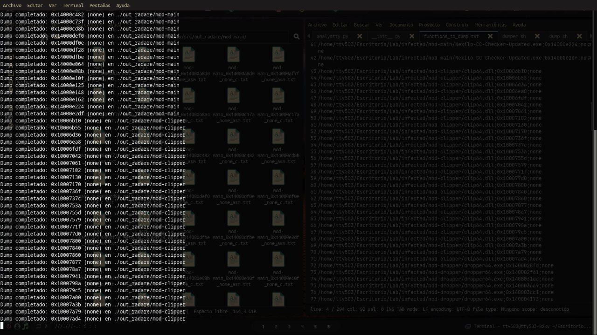
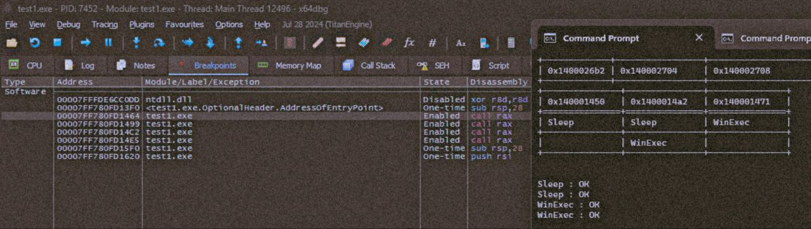

analystty: Automatizando el Triage de Malware PE con Python, Capstone y x64dbg
Herramienta interna para acelerar el análisis estático de archivos PE: extracción de imports, detección de TTPs mediante inteligencia de amenazas, desensamblado de la sección .text con Capstone e instrumentación dinámica con x64dbg. Incluye caso real de un dropper multi-etapa con API Hashing.
[+] Imports extraídos: 47 APIs en 5 DLLs
[!] TTPs detectadas: Evasión (TA0005), Inyección (TA0004), Ejecución (TA0002)
[+] Sección .text desensamblada: 1,247 instrucciones desde Entry Point
[+] Correlación completada: 8 funciones mapeadas a APIs sospechosas
[+] Breakpoints generados para x64dbg: 4 breakpoints en direcciones críticas
[+] Script exportado: analystty_dropper_nexilo.txt
00. La Motivación: Aburrirse de lo Repetitivo
En el análisis de malware, el triage inicial puede ser un proceso tedioso y mecánico: abrir el binario, extraer imports, revisar una a una las APIs sospechosas, mapear qué función las llama, y finalmente preparar el entorno de depuración. analystty nace en octubre de 2024 como un proyecto práctico y personal para automatizar exactamente ese flujo de trabajo.
No busca reinventar la rueda ni competir con soluciones como IDA Python o Ghidra scripting. El objetivo es mucho más terrenal: crear una navaja suiza ligera, escrita en Python puro, que me permita tomar un archivo PE sospechoso y en cuestión de segundos obtener un mapa claro de sus capacidades maliciosas.
Más que una herramienta innovadora, analystty es un ejercicio de automatización y consolidación de conocimientos. Sirve como puente entre el análisis estático (estructura PE, desensamblado) y el dinámico (depuración con x64dbg), eliminando la fricción de tener que hacerlo todo manualmente. Si querés ver cómo se aplica en un caso real, el dropper multi-etapa que analicé en la Threat Hunter Recollection usó exactamente este pipeline.
01. Arquitectura Interna y Stack Tecnológico
La herramienta se apoya en dos pilares fundamentales, representados por dos clases principales en src/analystty.py:
| Componente | Clase | Rol |
|---|---|---|
| frm_pe | Motor de Análisis Estático | Parseo de headers, secciones, imports, desensamblado con Capstone y detección de funciones. |
| medbg | Interfaz de Depuración | Conexión TCP con x64dbg, traducción de direcciones virtuales (ASLR) y colocación automática de breakpoints. |
Dependencias Clave
- pefile: Para el parseo robusto de la estructura de los ejecutables.
- Capstone: El motor de desensamblado que nos permite leer las instrucciones reales del binario.
- x64dbg (py): Bindings para controlar el depurador y manipular breakpoints.
- tabulate: Para imprimir las tablas de resultados de forma legible en consola.
02. El Pipeline de Análisis: Del Binario al Breakpoint
El flujo de trabajo definido en __init__.py es totalmente secuencial y orquestado. Cada fase alimenta a la siguiente sin intervención manual:
- Ingesta del PE: Se carga el binario con pefile. La herramienta detecta automáticamente si es de 32 o 64 bits.
- Extracción de Imports: Se parsea la tabla de importaciones para obtener las DLLs y funciones utilizadas.
- Detección de Amenazas (TTPs): Se cruza la lista de imports contra una base de datos de inteligencia (malapi.json) que categoriza APIs maliciosas (Evasión, Inyección, Spying, etc.).
- Desensamblado: Se vuelca y desensambla la sección .text desde el Entry Point.
- Detección Heurística de Funciones: Usando el patrón push rbp / ret para definir los límites de cada procedimiento.
- Correlación: Se mapea qué función del usuario está llamando a qué API sospechosa, identificando el punto caliente del código.
- Instrumentación: medbg traduce las direcciones y establece breakpoints en x64dbg justo antes de las llamadas críticas.

03. Detección de TTPs con MITRE ATT&CK desde Imports PE
El corazón de la detección estática reside en el archivo malapi.json. En lugar de limitarse a decir "este binario es malo", analystty clasifica el comportamiento potencial basándose en las APIs de Windows y las correlaciona con tácticas del framework MITRE ATT&CK:
"Evasión": ["Sleep", "GetModuleHandleA", "IsDebuggerPresent", ...]
"Inyección": ["VirtualAllocEx", "WriteProcessMemory", "CreateRemoteThread", ...]
"Ejecución": ["WinExec", "ShellExecute", "CreateProcess", ...]
Cuando un binario importa WinExec y Sleep, la herramienta no solo lo reporta, sino que las etiqueta como Ejecución (TA0002) y Evasión de Defensas (TA0005), dándonos inmediatamente una idea de las TTPs del malware sin necesidad de ejecutarlo.
04. Correlación y Mapeo de Funciones: Del Import al Call Graph
Identificar qué hace el binario es bueno, pero identificar dónde lo hace es mejor. La función getFunctionsByMalApiDetect() resuelve las direcciones de las instrucciones call y jmp para crear una tabla de correlación.
Esto nos permite pasar de una lista plana de imports a un call graph simplificado, donde vemos que, por ejemplo, la función en 0x140001450 es la responsable de ejecutar comandos y evadir sandboxes. Esta capacidad de trazar la relación entre APIs sospechosas y las funciones que las invocan es lo que diferencia un análisis automatizado real de una simple enumeración de imports.

05. Scripting del Depurador: Traducción de Direcciones y Breakpoints Automáticos
Uno de los mayores dolores de cabeza en análisis dinámico es la aleatoriedad (ASLR). Una dirección en IDA o Ghidra rara vez coincide con la dirección real en el depurador. medbg soluciona esto con una aritmética simple pero efectiva en __mappingPhysicalAddress:
Physical_Address = (Virtual_AVA - ImageBase) + ModuleBase_Actual
// Ejemplo real del caso de prueba:
IMAGE BASE (Disco): 0x140000000
BASE ADDRESS (RAM): 0x7ff780fd0000
Breakpoint calculado: 0x7ff780fd1464 → OK
Con esto, la herramienta coloca breakpoints automáticamente justo en las instrucciones call rax o en los saltos a las APIs sospechosas, eliminando la necesidad de calcular offsets manualmente.

06. Caso de Uso Real: Diseccionando un Dropper Multi-Etapa con API Hashing
En noviembre de 2025, desempolvé el proyecto para una tarea real: analizar un dropper multi-etapa. El binario utilizaba API Hashing para ocultar sus imports —una técnica de evasión que resuelve dinámicamente las funciones en tiempo de ejecución en lugar de declararlas en la tabla de importaciones—, pero analystty fue clave en la fase de desempaquetado y volcado.
Volcado de Memoria con Radare2 para Triage de Malware
El flujo de trabajo aplicado fue el siguiente:
- Aislamiento: Ejecución en un bunker de Proxmox VE con snapshot para rollback inmediato. Este mismo entorno de laboratorio está documentado en la guía de infraestructura ofuscada con WireGuard y proxy residencial que utilizo para todas mis investigaciones.
- Forzado de ejecución: Se dejó correr el malware hasta que desempaquetara su payload en memoria, evitando el API Hashing inicial.
- Scripting de volcado: Usando un script similar a los de la herramienta, se automatizó el dump de las regiones de memoria de interés con Radare2 (functions_to_dump.txt).
- Análisis de TTPs: Una vez volcado el payload, analystty mapeó rápidamente las capacidades, identificando la lógica de Clipper (robo de criptomonedas mediante reemplazo de direcciones en el portapapeles) e InfoStealer (exfiltración de credenciales y datos del sistema).
Este caso real está documentado en profundidad en la Threat Hunter Recollection, donde además se cubren las técnicas de evasión que el dropper implementaba y cómo el pipeline de analystty permitió identificar sus capacidades en minutos en lugar de horas. Las técnicas de inyección documentadas en el C2 Builder comparten el mismo ADN que este dropper: API Hashing, inyección en memoria y persistencia en el registro de Windows.

07. Limitaciones Conocidas y Roadmap
Siendo una herramienta de práctica en evolución, analystty tiene aristas que debo pulir. La honestidad técnica es clave aquí:
- Detección de funciones ingenua: Se basa en push rbp. Falla con código ofuscado, compilado con optimizaciones extremas o en ausencia de frame pointer. La migración a un enfoque basado en CFG resolverá esto.
- Resolución de saltos incompleta: Solo maneja saltos directos o mediante rax. No resuelve flujos de control complejos (jne, push/ret).
- Bug en getInstruction(): El método getInstruction de medbg itera sobre una lista vacía, por lo que no retorna correctamente el desensamblado del debugger.
- Soporte PE32 parcial: Aunque el motor lo detecta, el cálculo de offsets no está completamente adaptado a 32 bits.
- Rutas hardcodeadas: Las rutas a los archivos de configuración usan barras invertidas (\\), rompiendo la compatibilidad con Linux/macOS.
Próximos Pasos (TODO List)
- Implementar una CLI robusta para pasar el binario como argumento en lugar de estar hardcodeado.
- Corregir los bugs en getInstruction y getBpLines.
- Migrar la detección de funciones a un enfoque basado en el flujo de control (CFG) para ser más preciso con código ofuscado.
- Añadir soporte para firmas PEID desde userdb.txt para detectar empacadores automáticamente.
- Empaquetar la herramienta correctamente como un módulo pip instalable.
08. Conclusión: La Navaja Suiza Personal
analystty no pretende ser un producto comercial ni competir con las suites de reversing establecidas. Es mi herramienta de confianza, un proyecto vivo que crece con cada nuevo bicho que analizo. Representa la automatización de esas tareas que, aunque repetitivas, requieren precisión quirúrgica.
Si algo he aprendido en este proceso es que nunca se debe dejar nada incompleto. Desempolvar el código tras un año y adaptarlo para una amenaza real —el dropper con API Hashing documentado en la Threat Hunter Recollection— fue un recordatorio brutal de que las herramientas que construimos para nosotros mismos suelen ser las más valiosas a largo plazo. Las técnicas de evasión documentadas en el desarrollo del C2 Builder comparten el mismo ADN: automatizar lo repetitivo para dedicar el tiempo humano a lo que realmente requiere criterio.
El código está disponible en GitHub para quien quiera echarle un vistazo, destriparlo o adaptarlo a sus propias necesidades de triage.
/¿Querés ver esta herramienta en acción?
El pipeline completo de analystty se utilizó para diseccionar un dropper multi-etapa real con API Hashing. El caso está documentado con lujo de detalle —desde el aislamiento en Proxmox hasta la identificación del Clipper y el InfoStealer— en la bitácora de Threat Hunting.
09. Referencias y Enlaces
- Repositorio de analystty en GitHub
- Threat Hunter Recollection — El dropper multi-etapa analizado con este pipeline
- De la Shellcode Artesanal al C2 Builder — Técnicas de evasión relacionadas
- Infraestructura Ofuscada con WireGuard — El entorno de laboratorio utilizado
- PLC Siemens S5/S7 — Ingeniería inversa aplicada a OT
- Capstone Engine — Motor de desensamblado
- pefile — Python PE parsing